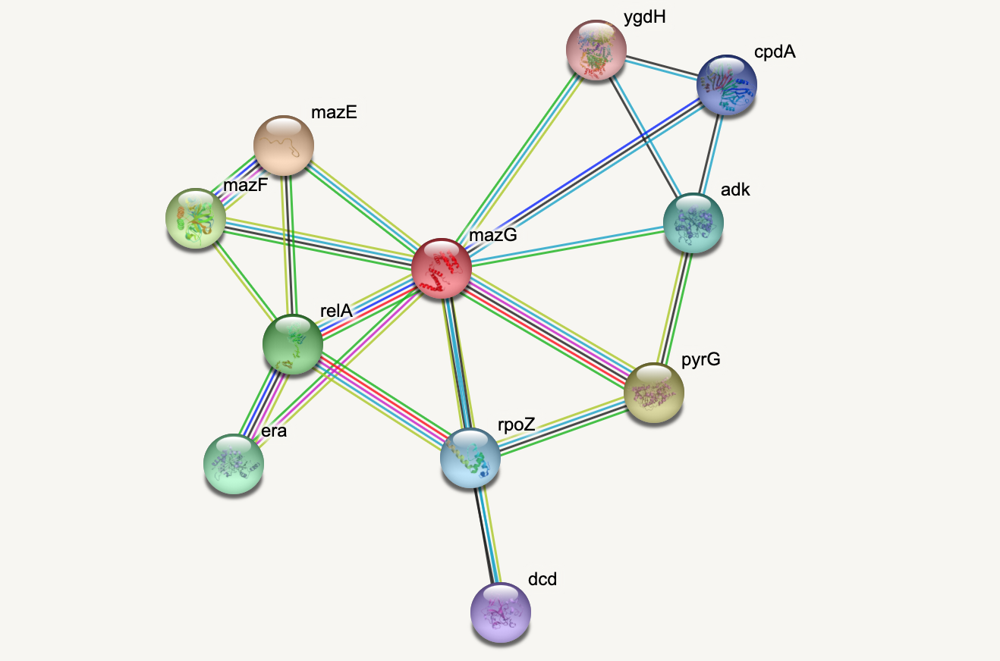

Networks - Introduction
Figure 1
Example: Protein-protein interactions
Protein-protein interactions (PPIs) (PLoS: Protein–Protein Interactions) refer to specific functional or physical contact between proteins in vivo. Interactions may be dependent on biological context, organism, definition of interaction, and many other factors. An example of PPIs can be seen below.
PPIs may be conceptualised as a network, in order to give greater context to the protein interactions, and to see how changes to one protein may affect another protein several steps removed. A PPI network can be modelled via a graph in which the nodes represent the proteins and the edges represent interactions: an edge from node A to node B indicates protein B interacts with protein A. The diagram above shows the PPI network centred around the protein \(mazG\) in Escherichia coli K12 MG1655. This is part of a toxin-antitoxin system. These systems generally encode pairs of toxin and inhibitory antitoxin proteins, are transmitted by plasmids, and likely serve several biological functions including stress tolerance and genome stabilisation. \(mazG\) regulates the type II toxin-antitoxin system shown in this network, where \(mazF\) is the toxin and \(mazE\) is the antitoxin. More details on the proteins in this network can be seen on STRING-DB (STRING-DB: mazG in E. coli.
At the end of this lesson we are going to use Python to draw this PPI network. Before this however, we shall begin with some examples to familiarise you with the elements and properties of graphs.
Figure 2

Figure 3

Figure 4

Figure 5

Figure 6

Figure 7

Figure 8

Figure 9

Figure 10
Figure 11

Figure 12
Figure 13

Figure 14

Figure 15
Figure 16
Figure 17
Figure 18
Figure 19

Figure 20

Figure 21

Figure 22
Figure 23
Networks - Quantification
Figure 1

Figure 2

Figure 3

Figure 4
Figure 5

Figure 6

Figure 7

Figure 8

Figure 9

Figure 10

Figure 11

Networks - Applications
Figure 1
Figure 2

Figure 3
Figure 4
Figure 5

Figure 6

Figure 7
Figure 8

Figure 9

Figure 10

Figure 11
Example: Microbiome network
Microbiome data can be collected from a wide variety of environments, and is generally considered to be the bacterial, fungal, and viral components of a given environment. Friedman and Alm (2012) used data from the Human Microbiome Project to calculate pairwise interaction correlations for each operational taxonomic unit (OTU). They then used Python and NetworkX to analyse and visualise several of these correlation datasets for each human body site. The challenge here is to extract network information about a graph from bivariate quantities like the correlation coefficient.
 As the correlation data are
open access, we can access them and derive the network.
As the correlation data are
open access, we can access them and derive the network.
Data are imported from text files. In this case, it is not a CSV file.
Rather, the data are tab separated. We can adjust for this by specifying
the keyword argument delimiter for tab. As the correlation
coefficients are stored as decimal point numbers, we specify the keyword
argument dtype as floating point ‘float64’.
If you check the file, you will see that the first entry is ‘1.0’. This is because all self-correlations are (trivially) equal to one. We replace those diagonal values with 0 to avoid (nonsensical) self-connections in the network.
PYTHON
gutbact = read_csv('data/Stool_sparse_adj_matrix.txt',
header=None, delimiter='\t', dtype="float64")
gutbactNames = read_csv('data/Stool_sparse_matrix_names.txt',
header=None)
gutbact= gutbact.to_numpy()
fill_diagonal(gutbact, 0)
gutbactNames= gutbactNames.to_dict()
gutbactLabels = gutbactNames[0]PYTHON
gutbactGraph = nx.from_numpy_matrix(gutbact)
gutbactLayout = nx.circular_layout(gutbactGraph)
fig, ax = subplots(figsize=(16,16))
nx.draw(gutbactGraph, gutbactLayout,
node_size=3000,
node_color='r',
labels=gutbactLabels)
show()This gives us the correlation network from the stool samples, with nodes labelled by the OTU number. However, this doesn’t look much like the data from the article, partly as there are so many edges. The reason is that any number in the network matrix that is not equal to zero is interpreted as an edge. Thus, essentially the graph is fully connected.
Functional Networks
In the paper, Friedman and Alm (2012), the edges are taken from the correlation coefficients of the correlation matrix. I.e. they define the correlation matrix as a network matrix. But the entries of the correlation matrix are not 0s and 1s as we have used so far. Instead they are real numbers between -1 and 1. What Friedman and Alm did to obtain meaningful edges was to pick a threshold correlation, e.g. \(|cc| = 0.3\) and set any matrix entry with absolute value smaller than the threshold as 0. All other values are left as they are. Because anything non-zero will be interpreted as an edge, this means that they only plot edges where the correlation coefficient is greater than 0.3 or less than -0.3. Such networks are referred to as functional networks.
To threshold the correlation matrix in Python, we select matrix values between -0.3 and 0.3, and replace them with 0. Then we convert this thresholded network matrix to a graph and plot it.
PYTHON
from numpy import where, logical_and
threshold = 0.3
gutbact_threshold = where(logical_and(gutbact>=-threshold , gutbact<=threshold), 0, gutbact)PYTHON
gutbactGraph = nx.from_numpy_matrix(gutbact_threshold)
fig, ax = subplots(figsize=(16,16))
nx.draw(gutbactGraph, gutbactLayout,
node_size=3000,
node_color='r',
labels=gutbactLabels)
show()
This network only displays edges where strong correlations were found and this is how Friedman and Alm obtained their graphs. Note that the network structure now is a function of the chosen threshold. Smaller thresholds yield more edges, higher thresholds fewer edges. Choosing the right threshold may be difficult and needs further thought.
The creation of networks from functional data opens a wide field of research: any interrelation matrix obtained with whatever metric can be interpreted as a network matrix and converted into a graph. As an example, see Figure 1 in The Brain as a Complex System: Using Network Science as a Tool for Understanding the Brain which describes the procedure for brain imaging.
This concludes our set of Lessons on network handling in Python. For practice, try to find a database that touches on topics of your own interest. As an example, in the context of the human brain, there is a rich database at the Human Connectome Database. Each database will present its own challenges and obstacles. Nevertheless, it is worth to overcome those to be able to work with the data in Python. Eventually, all functions and dysfunctions observed in living systems are a consequence of interactions between components.
Figure 12
Figure 13